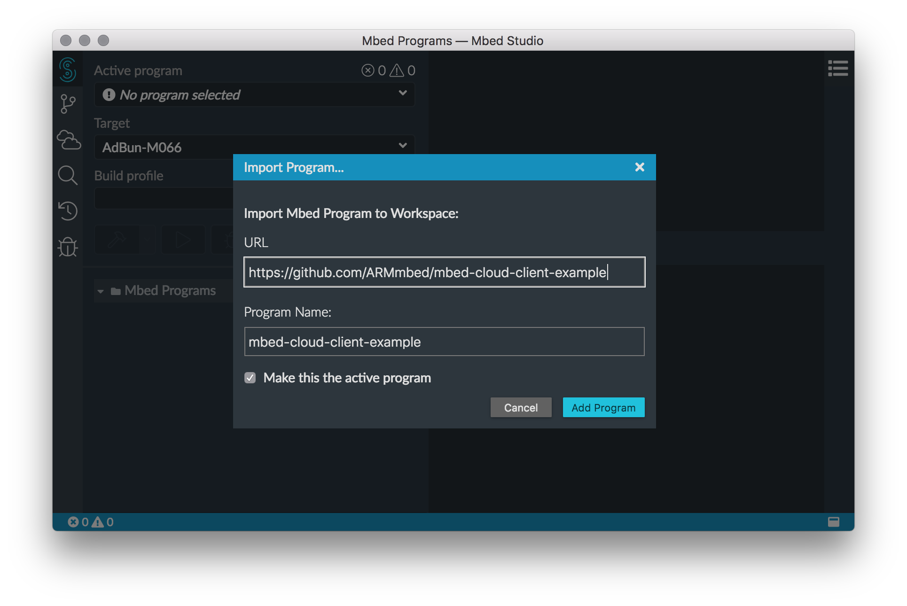
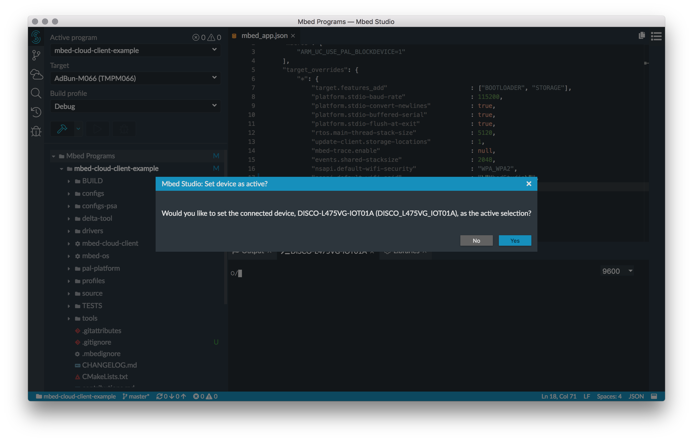
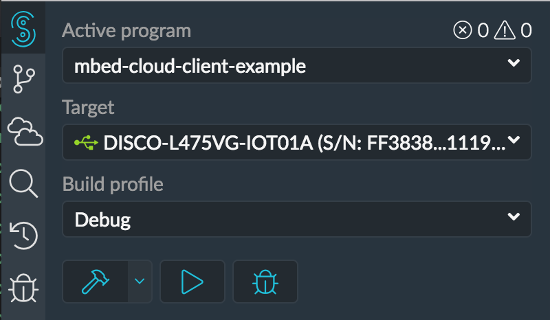
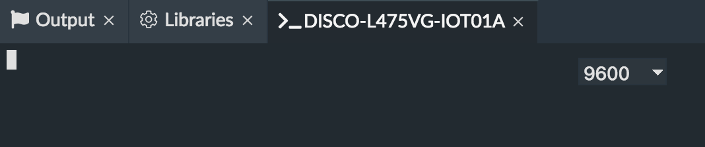
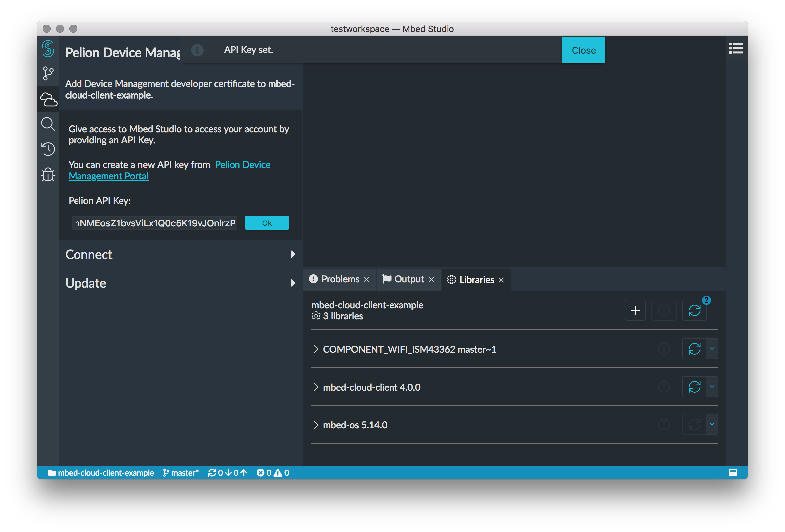

Run installer for your platform from installers folder located on usb flash drive.
Download Mbed Studio for your platform from https://os.mbed.com/studio
Install ST-Link USB drivers option. It is required for flashing and debugging ST boards (including DISCO-L475VG-IOT01A) in Mbed Studio on Windows.Use Mbed account to login to Mbed Studio. Skip next step if you have an Mbed account.
Don't have an account? Create one now link to create an account.Unzip mbed-cloud-client-example.zip file located in examples folder on usb flash drive into your workspace: ~/Mbed Programs. Restart Mbed Studio if needed.
Import mbed-cloud-client-example example using menu : File->Import Program.
Url: https://github.com/ARMmbed/mbed-cloud-client-example
Depending on internet connection it may take a while. Progress is visible in bottom-right corner of Mbed Studio.
Open Libraries panel from menu: View->Libraries
Connect DISCO-L475VG-IOT01A board to laptop using micro USB cable. Mbed Studio should recognise the board and allow user to select it for main program.
Important: Use micro usb port on the board marked as USB STLINK !
A green usb icon should appear next to the target indicating that board is connected. Deploy and Debug buttons should be now enabled.
Serial monitor should be automatically attached:
PDM support from menu: View -> Pelion Device Management.Pelion Device Management Portal link. Skip to point 7 if you already have an api key.Log in with another provider and then Log in with account.mbed.com option:PDM account:portal.mbedcloud.com and login to your account.Access management -> API keys:Select either Developers or Administrators group. Copy api key after creation. 7. Paste api key in Mbed Studio: 
DISCO_L475VG_IOT01A targets settings from configs/wifi.json into mbed_app.json:mbed_app.json:MbedStudioilovembedplus button:115200 baud rate from the dropdown on the serial port panel.Run button on program panel. Mbed Studio will build a program and flash it on the device. Progress will be visible in Output panel and in bottom-right corner of Mbed Studio.serial port panel:
Device directory->Devices:RESOURCES tab:Search for button_resource with path: /3200/0/5501 and select it.
Click an USER button on DISCO-L475VG-IOT01A board (big blue button). Graph will automatically update after each press of the USER button:
Serial monitor panel in Mbed Studio will log information about messages sent to Pelion Device Management:To start debugging click debug button in program panel. Program will be built and flashed into the device. Debug panel will appear and execution will stop on the first line in main.
User button click. Set breakpoint there and see that program stops after the button is pressed.Open main.cpp file in editor. Write some code and check how C/C++ intellisense works in Mbed Studio.
Hint1: Hold ctrl to change variables or imports into links.
Hint2: There are many C/C++ intellisense actions available on right click in editor. For example: Go to Type definition.
Hint3: Remove semicolon from any line in editor and see what happens.
DISCO-L475VG-IOT01A board has many sensors built-in. Try to add new resource in main.cpp that exposes a value from a single resource. Read that value in Pelione Device Management Portal.
Avilable sensors:
Hint1: Additional libraries may need to be added. To add a library click plus button in Libraries panel:
Hint2: https://os.mbed.com/teams/ST/code/HelloWorld_ST_Sensors/ may be useful.